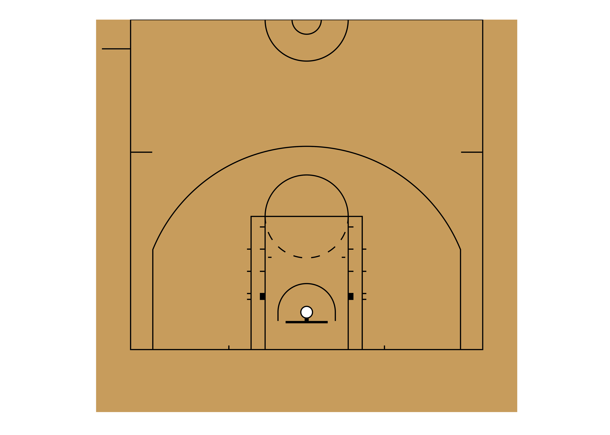
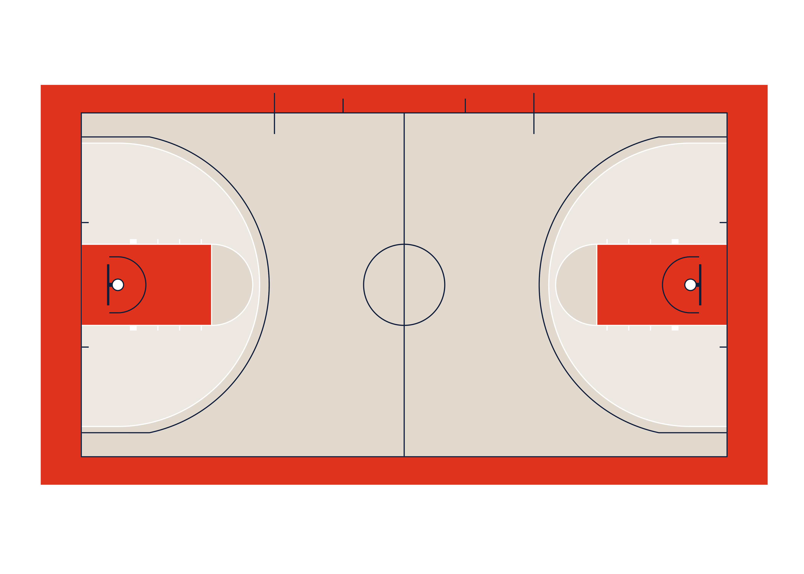
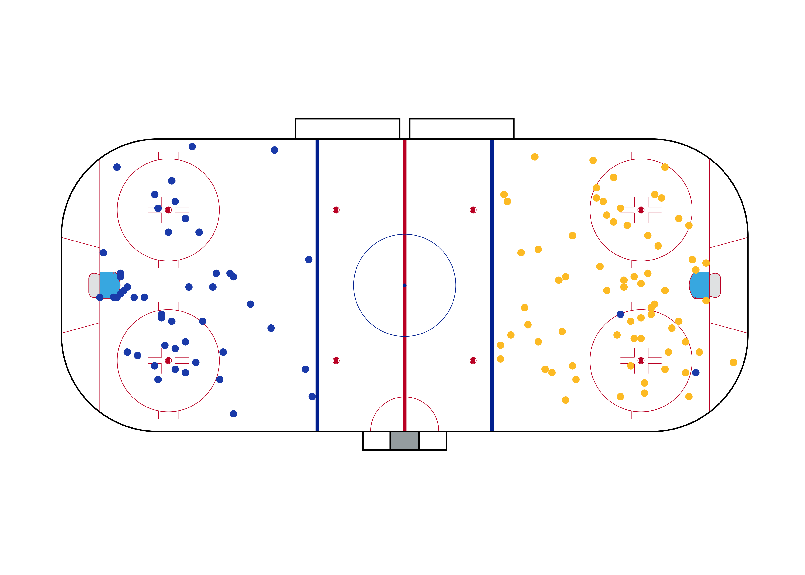
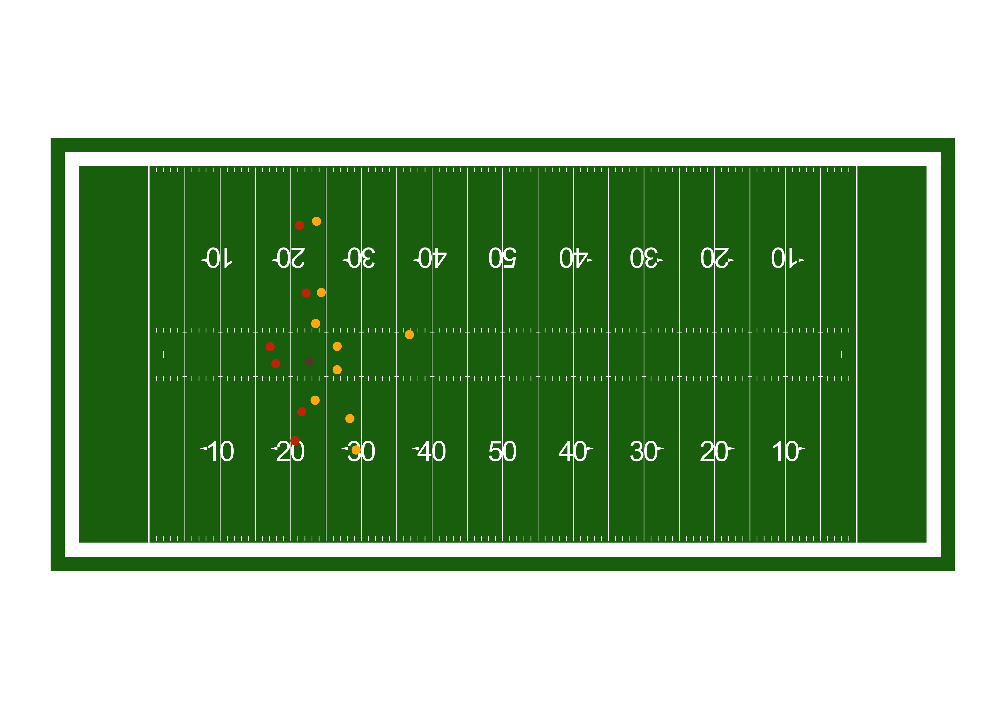

As the field of sports analytics evolve, there’s a growing need for methods to both track and visualize players throughout the game. This package aims to make this easy regardless of sport needed to be plotted.
Installation
The most recent release of sportyR is available on CRAN, and it can be installed directly via:
# Install released version from CRAN
install.packages('sportyR')The development version of sportyR can be installed from GitHub with:
# Install development version from GitHub
devtools::install_github("rossdrucker/sportyR")Once the library is installed, be sure to load it into the working environment.
Plotting Functions
All plotting functions in this library are named as geom_{sport}(), and take the following arguments:
league: the league code for the sport. In all functions, this will NOT have a default value. The supplied league is case-insensitive. Future iterations of this package may allow the full league name to be supplied if desired (e.g.league = 'National Basketball Associaton'instead ofleague = 'NBA'), but this feature is not currently available.full_surf: a boolean indicating whether or not to plot the full surface. This defaults toTRUE.
NOTE: this argument is not taken ingeom_baseball()as this surfaces is always shown in full (there’d be no reason to only draw half the diamond).rotate: a boolean indicating whether or not to rotate the surface. All surfaces will be horizontal by nature. This defaults toFALSErotation_dir: the direction in which to rotate the plot (ifrotate == TRUE). This defaults to'ccw'for counterclockwise.
Plot Units
Each plot function has a standardized unit of measure in which the plot is created, and is standardized by the primary units specified in their respective rule books. They are as follows:
| Sport | League | Primary Plotting Unit |
|---|---|---|
| Baseball | MLB | ft |
| Basketball | FIBA | m |
| Basketball | NBA | ft |
| Basketball | NCAA Basketball | ft |
| Basketball | WNBA | ft |
| Football | CFL | yd |
| Football | NCAA Football | yd |
| Football | NFL | yd |
| Hockey | IIHF | m |
| Hockey | NCAA Hockey | ft |
| Hockey | NHL | ft |
| Hockey | NWHL | ft |
| Hockey | PHF | ft |
| Soccer | FIFA | m |
| Soccer | MLS | m |
| Soccer | NCAA Soccer | m |
| Soccer | NWSL | m |
| Soccer | Premier League | m |
| Tennis | ITF | ft |
| Tennis | NCAA | ft |
However, since the data that is supplied may come in various units of measure, the plots are able to be generated in the data’s units. This is done via the unit argument in geom_{sport}(). The features themselves will look visually identical, but the underlying coordinate grid will change.
Additionally, the convert_units() function can be called on a data frame to convert from the data’s arguments to the plot’s. For example, if soccer data is given in yards, but is desirable to be plotted in meters, calling convert_units(tracking_data, 'yd', 'm', conversion_columns = c('x', 'y')) will convert the x and y coordinates from yards to meters.
As mentioned above, the geom_{sport}() family of functions allow for rotations of surfaces via the rotate argument. To make this easy, sportyR also allows for the rotation of data frames’ coordinates so long as they contain an x and y column via the rotate_coords() function. Translation and reflection of coordinates are also possible through translate() and reflect() functions respectively.
Surface Examples
Most playing surfaces are standard in size, so they can be rendered via a call to the proper geom_{sport}() function like so:
# Draw a basic MLB field plot
geom_baseball('mlb')
Certain functions are able to take additional parameters. As an example, soccer pitches are not always a standard size. For this reason, users can specify in the call to geom_soccer() what the touchline and goal line lengths should be.
# Create a 100m by 75m FIFA pitch
geom_soccer('fifa', touchline_length = 100, goal_line_length = 75)
It’s also possible to plot half-surfaces and rotated surfaces:
# Draw half of a rotated NBA court
geom_basketball('nba', full_surf = FALSE, rotate = TRUE)
Creating a realistic, customized output plot is also possible by supplying the proper arguments to recolor. More information on how to customize is in the next section. NOTE: not all of the arguments below are needed, however all are shown to display the flexibility with which the plots can be customized.
# Create a totally customized NCAA basketball court
geom_basketball(
'ncaa',
court_background_color = '#e8e0d7',
center_circle_color = '#13294b',
division_line_color = '#13294b',
endline_color = '#13294b',
sideline_color = '#13294b',
team_bench_color = '#13294b',
substitution_area_color = '#13294b',
court_apron_color = '#e84a27',
m_three_point_line_color = '#13294b',
w_three_point_line_color = '#ffffff',
m_two_point_range_color = '#e8e0d7',
w_two_point_range_color = '#ffffff66',
amateur_free_throw_lane_color = '#ffffff',
amateur_painted_area_color = '#e84a27',
amateur_free_throw_lane_lines_color = '#ffffff',
free_throw_semi_circle_line_color = '#ffffff',
free_throw_semi_circle_fill_color = '#e8e0d7',
lower_defensive_box_color = '#13294b',
restricted_area_arc_color = '#13294b',
backboard_color = '#13294b',
basket_ring_color = '#13294b',
net_color = '#ffffff'
)
Another quick example with a football field, but this time only changing one of the coloring elements:
# Create a blue football field
geom_football(
'ncaa',
grass_color = '#2e4597'
)
cani Functions
The main functionality of plotting is intended to be straightforward and easy to use, but questions are sure to arise about what can and can’t be plotted and customized in the current version of the package. The cani_ family of functions are here to help answer those questions directly. Their syntax is meant to resemble a question like
Can I plot a football field?
or
Can
sportyRmake a baseball plot?
and message back the answer. Here’s how they work:
cani_plot_league('mlb')
#> A plot for MLB can be created via the geom_baseball() function
cani_color_league_features('nba')
#> Here are the viable plotting features to color for NBA:
#>
#> court_background_color
#> inner_center_circle_color
#> outer_center_circle_color
#> division_line_color
#> endline_color
#> sideline_color
#> team_bench_color
#> substitution_area_color
#> court_apron_color
#> three_point_line_color
#> two_point_range_color
#> professional_free_throw_lane_color
#> professional_painted_area_color
#> amateur_free_throw_lane_color
#> amateur_painted_area_color
#> professional_free_throw_lane_lines_color
#> amateur_free_throw_lane_lines_color
#> free_throw_semi_circle_line_color
#> free_throw_semi_circle_fill_color
#> free_throw_dashed_semi_circle_color
#> lower_defensive_box_color
#> restricted_area_arc_color
#> backboard_color
#> basket_ring_color
#> net_colorFor more information, call ?cani_plot_league, ?cani_plot_sport, or ?cani_color_league_features.
Adding Tracking Data
Because this package is an extension of the ggplot2 package, data can be added much the same way on top of the surface plot that geom_{sport}() creates. Although tracking data isn’t widely publicly available yet, there are a few examples to use. The data sources for the following examples are below.
sportyR makes shot charts in all sports significantly easier. Here’s a look at a shot chart from an NWHL game between the Minnesota Whitecaps and the Boston Pride (data provided for the Big Data Cup - 2021):
# Read data from the Big Data Cup
bdc_data = read.csv('https://raw.githubusercontent.com/bigdatacup/Big-Data-Cup-2021/main/hackathon_nwhl.csv')
# Change names of X.Coordinate and Y.coordinate to x and y respectively
names(bdc_data)[13:14] = c('x', 'y')
# Shift coordinates to fit on the rink
bdc_data = translate(bdc_data, translate_x = -100, translate_y = -42.5)
# Subset to only be shots from the game on 2021-01-23 between the Minnesota
# White Caps and Boston Pride
bdc_shots = bdc_data[(bdc_data$Event == 'Shot') &
(bdc_data$Home.Team == 'Minnesota Whitecaps') &
(bdc_data$game_date == '2021-01-23'), ]
# Separate shots by team
whitecaps_shots = bdc_shots[bdc_shots$Team == 'Minnesota Whitecaps', ]
pride_shots = bdc_shots[bdc_shots$Team == 'Boston Pride', ]
# Reflect the Boston Pride shots to make them appear on the other side of the
# ice
pride_shots = reflect(pride_shots, over_y = TRUE)
# Draw the rink
nwhl_rink = geom_hockey('nwhl')
# Add the shot locations
nwhl_rink +
geom_point(data = whitecaps_shots, aes(x, y), color = '#2251b8') +
geom_point(data = pride_shots, aes(x, y), color = '#fec52e')
The functionality of sportyR also makes gif-making via gganimate much easier as well. This is a play from Week 15 of the 2018 NFL season between the Chicago Bears and Green Bay Packers. Data made available for the Big Data Bowl 2021 Kaggle competition.
# Load the play data
example_nfl_play = read.csv('data-raw/example-pbp-data.csv')
# Prep data for plotting
example_nfl_play[example_nfl_play['team'] == 'home', 'color'] = '#c83803'
example_nfl_play[example_nfl_play['team'] == 'away', 'color'] = '#ffb612'
example_nfl_play[example_nfl_play['team'] == 'football', 'color'] = '#624a2e'
# Create the field
nfl_field = geom_football('nfl')
# Add the points on the field
play_anim = nfl_field +
geom_point(data = example_nfl_play, aes(x, y), color = example_nfl_play$color) +
transition_time(example_nfl_play$frameId)
# Show the animation
play_anim
License
This package is released under the MIT License.
Contributions
General Managers
Contribute by adding a new sport and become its general manager. Current general managers (and their sports) are:
- Ross Drucker - Baseball
- Ross Drucker - Basketball
- Ross Drucker - Football
- Ross Drucker - Hockey
- Ross Drucker - Soccer
Coaching Staffs
Notice something for a sport that already exists, but isn’t quite right? Join that sport’s coaching staff!
Scout Team
By regularly reporting issues, making very slight modifications, fixing typos, or just helping others navigate their own issues, you’re able to join the Scout Team!
sportyRtist
The sportyR logo was created by Lindsey Kelso. Check her out on Instagram or her online shop!